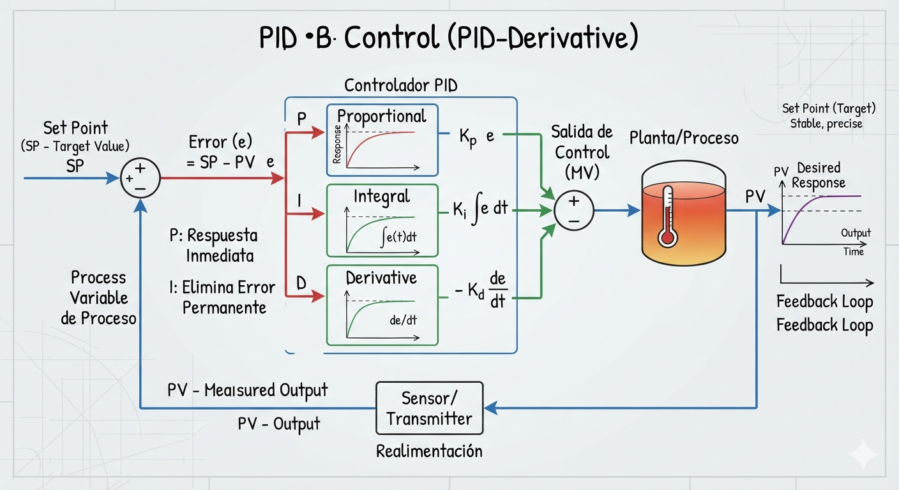

Introducción a Python
Sistemas Dinámicos y Modelado
Análisis de la respuesta temporal
Análisis de estado estacionario
Lugar de las raíces
Respuesta en frecuencia
Diseño de compensadores
Control Moderno
Error
Por favor, active JavaScript para habilitar la funcionalidad de búsqueda.